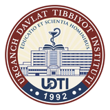
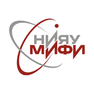
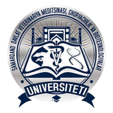

Graduates
141 students graduated from our school in the last four years. 131 of them study at universities and 6 at colleges (technikums).
Year by year
- University
- College (technikum)
- Not specified
Graduates’ certificates
Strong results open the door to good universities.
Growing every year
Graduates with a certificate
Studying outside Karakalpakstan
Medicine and engineering/IT
Medicine and healthcare
at 10 institutions
 Karakalpakstan Medical Institute4
Karakalpakstan Medical Institute4 Nukus Public Health College No. 2 named after Ibn Sina2
Nukus Public Health College No. 2 named after Ibn Sina2
Urgench State Medical Institute2
Engineering and IT
at 8 institutions
 Nukus State Technical University5
Nukus State Technical University5 Karakalpak State University5
Karakalpak State University5 Karakalpakstan Institute of Agriculture and Agrotechnologies1
Karakalpakstan Institute of Agriculture and Agrotechnologies1
Explore by year
Where they study
- Karakalpak State UniversityNukus62
 Nukus State Pedagogical InstituteNukus12
Nukus State Pedagogical InstituteNukus12- Nukus State Technical UniversityNukus10
 Nukus Innovation InstituteNukus4
Nukus Innovation InstituteNukus4 Uzbekistan State World Languages UniversityTashkent4
Uzbekistan State World Languages UniversityTashkent4- Karakalpakstan Medical InstituteNukus4
- Karakalpakstan Institute of Agriculture and AgrotechnologiesNukus3
 University of Military Security and DefenseTashkent3
University of Military Security and DefenseTashkent3
All 34 institutions
 University of Innovation TechnologiesNukus3
University of Innovation TechnologiesNukus3 Uzbekistan State Institute of Arts and Culture, Nukus branchNukus2
Uzbekistan State Institute of Arts and Culture, Nukus branchNukus2 Navoi State UniversityNavoi2
Navoi State UniversityNavoi2- Nukus Public Health College No. 2 named after Ibn Sina collegeNukus2
 Tashkent State University of EconomicsTashkent2
Tashkent State University of EconomicsTashkent2- Urgench State Medical InstituteUrgench2
 Tashkent State Medical University, Chirchik branchTashkent2
Tashkent State Medical University, Chirchik branchTashkent2 Aralboyi Medical and Transport College collegeNukus2
Aralboyi Medical and Transport College collegeNukus2 Uzbekistan State Institute of Arts and CultureTashkent1
Uzbekistan State Institute of Arts and CultureTashkent1- University of Business and Science, Tashkent branchTashkent1
- Kegeyli District College No. 3 collegeKegeyli1

MEPhI National Research Nuclear University, Tashkent branchTashkent1 Tashkent University of Information TechnologiesTashkent1
Tashkent University of Information TechnologiesTashkent1 National University of UzbekistanTashkent1
National University of UzbekistanTashkent1 Samarkand State Medical UniversitySamarkand1
Samarkand State Medical UniversitySamarkand1 New Uzbekistan UniversityTashkent1
New Uzbekistan UniversityTashkent1- Nukus Public Health College No. 1 named after Ibn Sina collegeNukus1
- Cyber UniversityTashkent1
 Karshi State UniversityKarshi1
Karshi State UniversityKarshi1 Andijan State Medical InstituteAndijan1
Andijan State Medical InstituteAndijan1
Samarkand University of Veterinary Medicine, Livestock and Biotechnologies, Nukus branchNukus1 Samarkand State Pedagogical InstituteSamarkand1
Samarkand State Pedagogical InstituteSamarkand1 Namangan State UniversityNamangan1
Namangan State UniversityNamangan1 Urgench State UniversityUrgench1
Urgench State UniversityUrgench1 RANCH University of Technology, Nukus campusNukus1
RANCH University of Technology, Nukus campusNukus1 Termez State UniversityTermez1
Termez State UniversityTermez1
Fields they chose
- Economics and business30 · 22%
- Languages and philology23 · 17%
- Mathematics and natural sciences20 · 15%
- Medicine and healthcare17 · 12%
- Engineering and IT16 · 12%
- Law, history and social sciences15 · 11%
- Education and psychology13 · 9%
- Military3 · 2%
Across Uzbekistan
29 graduates study at universities outside Karakalpakstan.
Universities beyond Karakalpakstan
Where they study
- Karakalpak State UniversityNukus5
- Nukus State Technical UniversityNukus4
- Uzbekistan State Institute of Arts and Culture, Nukus branchNukus1
- Navoi State UniversityNavoi1
- Nukus Public Health College No. 2 named after Ibn Sina collegeNukus1
- Uzbekistan State Institute of Arts and CultureTashkent1
- Nukus State Pedagogical InstituteNukus1
Fields they chose
- Engineering and IT4 · 29%
- Economics and business3 · 21%
- Law, history and social sciences2 · 14%
- Mathematics and natural sciences2 · 14%
- Education and psychology1 · 7%
- Medicine and healthcare1 · 7%
- Languages and philology1 · 7%
Across Uzbekistan
2 graduates study at universities outside Karakalpakstan.
Universities beyond Karakalpakstan
Where they study
- Karakalpak State UniversityNukus12
- Nukus State Pedagogical InstituteNukus5
- Nukus Innovation InstituteNukus4
- Karakalpakstan Institute of Agriculture and AgrotechnologiesNukus2
- Tashkent State University of EconomicsTashkent1
- University of Military Security and DefenseTashkent1
- Uzbekistan State World Languages UniversityTashkent1
- Urgench State Medical InstituteUrgench1
All 12 institutions
- University of Business and Science, Tashkent branchTashkent1
- Navoi State UniversityNavoi1
- Nukus State Technical UniversityNukus1
- Kegeyli District College No. 3 collegeKegeyli1
Fields they chose
- Education and psychology6 · 19%
- Mathematics and natural sciences6 · 19%
- Economics and business5 · 16%
- Engineering and IT5 · 16%
- Law, history and social sciences3 · 10%
- Medicine and healthcare3 · 10%
- Languages and philology2 · 6%
- Military1 · 3%
Across Uzbekistan
6 graduates study at universities outside Karakalpakstan.
Universities beyond Karakalpakstan
Where they study
- Karakalpak State UniversityNukus20
- Karakalpakstan Medical InstituteNukus2
- University of Military Security and DefenseTashkent2
- Aralboyi Medical and Transport College collegeNukus2
- MEPhI National Research Nuclear University, Tashkent branchTashkent1
- Tashkent State University of EconomicsTashkent1
- Tashkent State Medical University, Chirchik branchTashkent1
- Uzbekistan State World Languages UniversityTashkent1
All 17 institutions
- Tashkent University of Information TechnologiesTashkent1
- National University of UzbekistanTashkent1
- Samarkand State Medical UniversitySamarkand1
- Nukus State Pedagogical InstituteNukus1
- New Uzbekistan UniversityTashkent1
- Karakalpakstan Institute of Agriculture and AgrotechnologiesNukus1
- University of Innovation TechnologiesNukus1
- Nukus Public Health College No. 1 named after Ibn Sina collegeNukus1
- Nukus Public Health College No. 2 named after Ibn Sina collegeNukus1
Fields they chose
- Medicine and healthcare8 · 21%
- Economics and business7 · 18%
- Languages and philology7 · 18%
- Mathematics and natural sciences5 · 13%
- Law, history and social sciences4 · 10%
- Engineering and IT3 · 8%
- Education and psychology3 · 8%
- Military2 · 5%
Across Uzbekistan
10 graduates study at universities outside Karakalpakstan.
Universities beyond Karakalpakstan
Where they study
- Karakalpak State UniversityNukus25
- Nukus State Technical UniversityNukus5
- Nukus State Pedagogical InstituteNukus5
- Karakalpakstan Medical InstituteNukus2
- Uzbekistan State World Languages UniversityTashkent2
- University of Innovation TechnologiesNukus2
- Cyber UniversityTashkent1
- Karshi State UniversityKarshi1
All 18 institutions
- Andijan State Medical InstituteAndijan1
- Samarkand University of Veterinary Medicine, Livestock and Biotechnologies, Nukus branchNukus1
- Samarkand State Pedagogical InstituteSamarkand1
- Namangan State UniversityNamangan1
- Urgench State UniversityUrgench1
- Uzbekistan State Institute of Arts and Culture, Nukus branchNukus1
- Tashkent State Medical University, Chirchik branchTashkent1
- RANCH University of Technology, Nukus campusNukus1
- Urgench State Medical InstituteUrgench1
- Termez State UniversityTermez1
Fields they chose
- Economics and business15 · 28%
- Languages and philology13 · 25%
- Mathematics and natural sciences7 · 13%
- Law, history and social sciences6 · 11%
- Medicine and healthcare5 · 9%
- Engineering and IT4 · 8%
- Education and psychology3 · 6%
Across Uzbekistan
11 graduates study at universities outside Karakalpakstan.
Universities beyond Karakalpakstan
Choose your path
Which field interests you? See where our graduates went.
Where they study
and 2 more institutions
By year
Cities
What certificates they had
25 of 27 graduates had at least one certificate
Certificate data covers the 2023–2026 graduates. A graduate can hold certificates in several subjects.
Where they study
By year
Cities
What certificates they had
22 of 22 graduates had at least one certificate
Certificate data covers the 2023–2026 graduates. A graduate can hold certificates in several subjects.
Where they study
By year
Cities
What certificates they had
8 of 18 graduates had at least one certificate
Certificate data covers the 2023–2026 graduates. A graduate can hold certificates in several subjects.
Where they study
and 5 more institutions
By year
Cities
What certificates they had
8 of 16 graduates had at least one certificate
Certificate data covers the 2023–2026 graduates. A graduate can hold certificates in several subjects.
Where they study
and 3 more institutions
By year
Cities
What certificates they had
5 of 12 graduates had at least one certificate
Certificate data covers the 2023–2026 graduates. A graduate can hold certificates in several subjects.
Where they study
and 3 more institutions
By year
Cities
What certificates they had
9 of 13 graduates had at least one certificate
Certificate data covers the 2023–2026 graduates. A graduate can hold certificates in several subjects.
Where they study
By year
Cities
What certificates they had
4 of 12 graduates had at least one certificate
Certificate data covers the 2023–2026 graduates. A graduate can hold certificates in several subjects.
Where they study
By year
Cities
What certificates they had
3 of 3 graduates had at least one certificate
Certificate data covers the 2023–2026 graduates. A graduate can hold certificates in several subjects.
Numbers come from the real results of our graduates, 2022–2026.
List of graduates
All our graduates and where they are studying.
| Name | University / college | Field |
|---|---|---|
| Amanbaeva Qanzada Jubandıq qızı | Uzbekistan State Institute of Arts and Culture, Nukus branchNukus | Law, history and social sciences |
| Ataxanova Nazira Nazirbay qızı | Nukus State Technical UniversityNukus | Engineering and IT |
| Baxtıbaeva Shaxnoza Maxmud qızı | Karakalpak State UniversityNukus | Economics and business |
| Inyatov Azizbek Rafatdin ulı | Karakalpak State UniversityNukus | Engineering and IT |
| Jalǵasbaeva Juldız Abatbay qızı | Nukus State Technical UniversityNukus | Economics and business |
| Jarılqasinova Diana Elmurza qızı | Navoi State UniversityNavoi | Education and psychology |
| Joldasbaeva Dilnaz Muxamatdin qızı | Nukus Public Health College No. 2 named after Ibn Sina collegeNukus | Medicine and healthcare |
| Jumabaev Adilbek Azat ulı | Karakalpak State UniversityNukus | Mathematics and natural sciences |
| Jumaxmetov Jańabay Perdebay ulı | Karakalpak State UniversityNukus | Engineering and IT |
| Qaypbaeva Dilaram Artıqbay qızı | Uzbekistan State Institute of Arts and CultureTashkent | Law, history and social sciences |
| Shalabaeva Feruza Baxtiyar qızı | Nukus State Technical UniversityNukus | Engineering and IT |
| Sherniyazova Saltanat Quwat qızı | Nukus State Pedagogical InstituteNukus | Mathematics and natural sciences |
| Umirbaev Elbrus Ernazar ulı | Nukus State Technical UniversityNukus | Economics and business |
| Urazbaeva Shaxnoza Oralbay qızı | Karakalpak State UniversityNukus | Languages and philology |
| Allambergenova Aysara Adilbay qızı | Nukus Innovation InstituteNukus | Education and psychology |
| Amanbaeva Merwert Baxtiyar qızı | Karakalpakstan Institute of Agriculture and AgrotechnologiesNukus | Economics and business |
| Axnazarova Altinay Qalxnazar qizi | Karakalpak State UniversityNukus | Mathematics and natural sciences |
| Aybarova Zarina Baxtiyar qızı | Tashkent State University of EconomicsTashkent | Economics and business |
| Aytmuratov Shamshet | Karakalpakstan Institute of Agriculture and AgrotechnologiesNukus | Engineering and IT |
| Azamatova Araylım Azamat qızı | Karakalpak State UniversityNukus | Economics and business |
| Bazarbaev Jasurbek Bayrambay ulı | Karakalpak State UniversityNukus | Engineering and IT |
| Bekbergenova Shaxnozabanu Anibek qizi | Nukus State Pedagogical InstituteNukus | Mathematics and natural sciences |
| Ernazarova Nilufar Erkinbay qızı | Nukus State Pedagogical InstituteNukus | Education and psychology |
| Eshmuratova Gulferuz Jeńisbaevna | Nukus State Pedagogical InstituteNukus | Education and psychology |
| Iqlasbaev Allayar Alpamisovich | University of Military Security and DefenseTashkent | Military |
| Jalgasbaeva Gulxumar Keunimjay qızı | Karakalpak State UniversityNukus | Economics and business |
| Joldasbaeva Aysuliw | Nukus Innovation InstituteNukus | Education and psychology |
| Joldasbaeva Dilyanora Medetbay qızı | Uzbekistan State World Languages UniversityTashkent | Languages and philology |
| Joldasbaeva Zulfiya Dawletbay qızı | Nukus State Pedagogical InstituteNukus | Mathematics and natural sciences |
| Jumabaeva Gulbanıw Bolısbay qızı | Karakalpak State UniversityNukus | Law, history and social sciences |
| Kayratdinov Paxratdin Asematdiyin uli | Nukus Innovation InstituteNukus | Education and psychology |
| Muratbaeva Juzimgul Dawletbay qizi | Urgench State Medical InstituteUrgench | Medicine and healthcare |
| Nietullaeva Shaxnozabanu Najimatdin qizi | Karakalpak State UniversityNukus | Mathematics and natural sciences |
| Nuratdinov Sayıpbek Maxsetbay ulı | Nukus State Pedagogical InstituteNukus | Mathematics and natural sciences |
| Pirdanova Begzada | Nukus Innovation InstituteNukus | Education and psychology |
| Saparbaeva Gulayda Maxsetbay qızı | Karakalpak State UniversityNukus | Engineering and IT |
| Saparniyazov Artıqbay Azirbaevich | Karakalpak State UniversityNukus | Economics and business |
| Sarsenbaeva Dilfuza Baxadir qızı | Karakalpak State UniversityNukus | Law, history and social sciences |
| Smetullaeva Feruza Nasir qızı | Karakalpak State UniversityNukus | Languages and philology |
| Tajetdinova Nurzada Jaqsimbay qizi | University of Business and Science, Tashkent branchTashkent | Medicine and healthcare |
| Tólepbergenova Aysulıw Jalǵasbay qızı | Navoi State UniversityNavoi | Medicine and healthcare |
| Toreniyazova Nursuliw Tenelbay qizi | Karakalpak State UniversityNukus | Mathematics and natural sciences |
| Turǵanbaeva Ziyada Baxadır qızı | Karakalpak State UniversityNukus | Law, history and social sciences |
| Uzakbaeva Ayjamal Muzapbar qızı | Nukus State Technical UniversityNukus | Engineering and IT |
| Yusupova Umida Baxtiyar qizi | Kegeyli District College No. 3 collegeKegeyli | Engineering and IT |
| Abatov Edilbek Adilbekovich | MEPhI National Research Nuclear University, Tashkent branchTashkent | Engineering and IT |
| Abdullaeva Ayjamal Salamat qizi | Tashkent State University of EconomicsTashkent | Economics and business |
| Allambergenov Muxammeddin Qadirbay o‘g‘li | Karakalpak State UniversityNukus | Economics and business |
| Allaniyazova Gulzada Janibek qızı | Karakalpak State UniversityNukus | Languages and philology |
| Aymuratov Tazabay Bayrambay ulı | Karakalpakstan Medical InstituteNukus | Medicine and healthcare |
| Babaxanova Riana Matimurat qizi | Tashkent State Medical University, Chirchik branchTashkent | Medicine and healthcare |
| Bazarbaeva Gulzar Muratbay qizi | Uzbekistan State World Languages UniversityTashkent | Languages and philology |
| Berdimuratova Alima Ismayil qizi | Karakalpak State UniversityNukus | Law, history and social sciences |
| Dawletbaeva Sayyora Saǵiydulla qizi | Karakalpak State UniversityNukus | Languages and philology |
| Duysenbaev Tursinbay Esenbay uli | Tashkent University of Information TechnologiesTashkent | Engineering and IT |
| Embergenov Nurpolat Adilbay uli | Karakalpak State UniversityNukus | Economics and business |
| Eshimbetova Malika Arepbay qizi | Karakalpak State UniversityNukus | Mathematics and natural sciences |
| Xamidullaeva Feruza Dauletovna | National University of UzbekistanTashkent | Mathematics and natural sciences |
| Iqlasbaev Nazarbek Oralbay o‘g‘li | Karakalpak State UniversityNukus | Law, history and social sciences |
| Ismailova Khurshida Yusupbek qızı | Karakalpak State UniversityNukus | Languages and philology |
| Jaksilikova Nilufar Darmenbay qızı | Karakalpak State UniversityNukus | Law, history and social sciences |
| Maxsudova Dilnoza Azamat qizi | Samarkand State Medical UniversitySamarkand | Medicine and healthcare |
| Muratbaeva Zulayxa Qurbanbay qızı | Nukus State Pedagogical InstituteNukus | Education and psychology |
| Nazarimbetova Gáwxar Sadatdin qızı | Karakalpak State UniversityNukus | Languages and philology |
| Qalbaeva Baxitgul Rashid qizi | Karakalpak State UniversityNukus | Mathematics and natural sciences |
| Qaypbaeva Ayjamal Artıqbay qızı | Karakalpak State UniversityNukus | Mathematics and natural sciences |
| Qidirbaeva Aysara Tursınbay qızı | Karakalpak State UniversityNukus | Engineering and IT |
| Raxmetdinov Salawatdin Baxram o‘g‘li | University of Military Security and DefenseTashkent | Military |
| Sherniyazova Manzura Toqtarbay qızı | Karakalpak State UniversityNukus | Education and psychology |
| Shirazova Guldana Ziuatdin qızı | Karakalpak State UniversityNukus | Mathematics and natural sciences |
| Tlegenova Feruza Allabay qızı | Karakalpakstan Medical InstituteNukus | Medicine and healthcare |
| Turebaev Saginbay Jangabergen uli | New Uzbekistan UniversityTashkent | Economics and business |
| Turǵanbaeva Aynura Muratbay qızı | Karakalpak State UniversityNukus | Languages and philology |
| Tursinbaev Jasurbek Axmed o‘g‘li | Karakalpak State UniversityNukus | Economics and business |
| Xojalepesova Dilafruz Kayratdin qizi | Karakalpakstan Institute of Agriculture and AgrotechnologiesNukus | Economics and business |
| Erniyazova Malika Ayniyaz qızı | Aralboyi Medical and Transport College collegeNukus | Medicine and healthcare |
| Joldasbaeva Parwaz Azamat qizi | University of Innovation TechnologiesNukus | Law, history and social sciences |
| Edilova Zuxra Toremurat qizi | Aralboyi Medical and Transport College collegeNukus | Medicine and healthcare |
| Daurxanova Gulmira | Karakalpak State UniversityNukus | Languages and philology |
| Allanazarova Rayxan | Karakalpak State UniversityNukus | Economics and business |
| Yusupbaeva Uldana Salamat qizi | Nukus Public Health College No. 1 named after Ibn Sina collegeNukus | Medicine and healthcare |
| Jadigerova Zarina Amangeldi qizi | Karakalpak State UniversityNukus | Education and psychology |
| Karamatdinova Gulqumar Sadatdin qizi | Nukus Public Health College No. 2 named after Ibn Sina collegeNukus | Medicine and healthcare |
| Karimbaev Asadbek Daniyar ulı | University of Military Security and DefenseTashkent | Military |
| Muratbaeva Sogdiana Arturovna | Not specified | — |
| Abdullaeva Sabrina Sipatdin qızı | Karakalpak State UniversityNukus | Economics and business |
| Abekov Rashid Baltabay ulı | Not specified | — |
| Ádilbaev Árman Nurlıbay ulı | Cyber UniversityTashkent | Engineering and IT |
| Ayapbergenov Shaxruxbek Bekbergen ulı | Karshi State UniversityKarshi | Law, history and social sciences |
| Aybarov Ǵayrat Baxtiyar ulı | Andijan State Medical InstituteAndijan | Medicine and healthcare |
| Balǵabaeva Nurzada Daryabay qızı | Not specified | — |
| Bazarbaev Batır Salamat ulı | Karakalpakstan Medical InstituteNukus | Medicine and healthcare |
| Begmuratova Gúldana Azamat qızı | Karakalpak State UniversityNukus | Mathematics and natural sciences |
| Bekbawliev Mırzabek Bayramovich | Karakalpak State UniversityNukus | Economics and business |
| Dalibaeva Ziyba Rústem qızı | Not specified | — |
| Dauletbaeva Shaxsanem Azamat qızı | Karakalpakstan Medical InstituteNukus | Medicine and healthcare |
| Dáwletbaeva Alfiya Paluanbay qızı | Uzbekistan State World Languages UniversityTashkent | Languages and philology |
| Dosnazarov Aqılbek Jumaǵali ulı | Karakalpak State UniversityNukus | Economics and business |
| Esemuratov Jaxangir Albertovich | Karakalpak State UniversityNukus | Economics and business |
| Xamidullaeva Aynur Dáwletovna | Karakalpak State UniversityNukus | Mathematics and natural sciences |
| Isakova Gúldana Qoshqarbay qızı | Karakalpak State UniversityNukus | Economics and business |
| Jalǵasbaeva Gulnura Kamalatdin qızı | Uzbekistan State World Languages UniversityTashkent | Languages and philology |
| Jańabaeva Elmira Sálmenovna | Karakalpak State UniversityNukus | Languages and philology |
| Jańabaeva Gúlzada Ilyas qızı | Samarkand University of Veterinary Medicine, Livestock and Biotechnologies, Nukus branchNukus | Economics and business |
| Jiemuratov Sultanbek Toshkentbay ulı | Nukus State Technical UniversityNukus | Engineering and IT |
| Jumambetova Gúlsima Ziynatdin qızı | Karakalpak State UniversityNukus | Mathematics and natural sciences |
| Jumamuratova Mexriban Begjan qızı | Karakalpak State UniversityNukus | Languages and philology |
| Jumamuratova Ramila Xojamuratovna | Samarkand State Pedagogical InstituteSamarkand | Languages and philology |
| Kaldibaeva Dilafruz Aybolsın qızı | Karakalpak State UniversityNukus | Economics and business |
| Kamalatdinov Dauletiyar Ilxam ulı | Namangan State UniversityNamangan | Law, history and social sciences |
| Keńesbaeva Gúlsevar Aliysher qızı | Karakalpak State UniversityNukus | Languages and philology |
| Keńesbaeva Dinara Paraxat qızı | Nukus State Pedagogical InstituteNukus | Languages and philology |
| Keunimjaeva Biybinaz Salamat qızı | Karakalpak State UniversityNukus | Economics and business |
| Mambetkarimov Ramazan Shámshetdin ulı | Urgench State UniversityUrgench | Law, history and social sciences |
| Maratov Bekpolat Ilxamatdin ulı | Uzbekistan State Institute of Arts and Culture, Nukus branchNukus | Law, history and social sciences |
| Maxsetbaev Usnatdin Aydosovich | Nukus State Technical UniversityNukus | Engineering and IT |
| Mnajatdinov Salauatdin Maxmutdin ulı | Nukus State Pedagogical InstituteNukus | Education and psychology |
| Mnajatdinova Shaxnoza Azamat qızı | Tashkent State Medical University, Chirchik branchTashkent | Medicine and healthcare |
| Muratbaeva Diana Bayrambay qızı | Karakalpak State UniversityNukus | Economics and business |
| Muratbaeva Gúlbáhár Dosnazar qızı | RANCH University of Technology, Nukus campusNukus | Economics and business |
| Muratov Álisher Dáwlet ulı | Karakalpak State UniversityNukus | Mathematics and natural sciences |
| Muxanov Miyras Jalǵasbay ulı | Nukus State Technical UniversityNukus | Economics and business |
| Nurniyazov Abzal | University of Innovation TechnologiesNukus | Engineering and IT |
| Ońǵarbaeva Nilufar Erpolatovna | Nukus State Pedagogical InstituteNukus | Languages and philology |
| Polatov Marat Furxat ulı | Nukus State Technical UniversityNukus | Economics and business |
| Qudiyarova Zarina Xojabay qızı | Urgench State Medical InstituteUrgench | Medicine and healthcare |
| Quwanıshbaeva Naǵiyma Baxtiyarovna | Karakalpak State UniversityNukus | Mathematics and natural sciences |
| Rzambetova Perijamal Boranbay qızı | Nukus State Pedagogical InstituteNukus | Languages and philology |
| Seytekova Nargiza Xalıqnazar qızı | Karakalpak State UniversityNukus | Languages and philology |
| Shamshieva Saparay Raxat qızı | University of Innovation TechnologiesNukus | Education and psychology |
| Tańatarova Gulmira Qalbay qızı | Karakalpak State UniversityNukus | Languages and philology |
| Tlepbaeva Tursınay Salamat qızı | Karakalpak State UniversityNukus | Law, history and social sciences |
| Tolebaev Muxammed Asanbekovich | Karakalpak State UniversityNukus | Mathematics and natural sciences |
| Tolıbaeva Aydınay Jalalatdin qızı | Karakalpak State UniversityNukus | Economics and business |
| Tolıbaeva Xurlixa Batırbay qızı | Karakalpak State UniversityNukus | Mathematics and natural sciences |
| Turǵanbaeva Ayzada Erpolat qızı | Nukus State Pedagogical InstituteNukus | Education and psychology |
| Turǵanbaeva Ulbosın Ońǵarbay qızı | Karakalpak State UniversityNukus | Economics and business |
| Ubaydullaeva Gúlbanıw Ismetulla qızı | Karakalpak State UniversityNukus | Languages and philology |
| Umarbaeva Madina Davletkeldi qızı | Karakalpak State UniversityNukus | Languages and philology |
| Urazbaeva Xansulıw Óskinbay qızı | Nukus State Technical UniversityNukus | Economics and business |
| Usenov Qaxraman Kuanishbay uli | Termez State UniversityTermez | Law, history and social sciences |
Nothing found
Source: school records for the 2022/2023–2025/2026 school years. Graduates’ names are published with their permission; certificate results are shown as totals only.